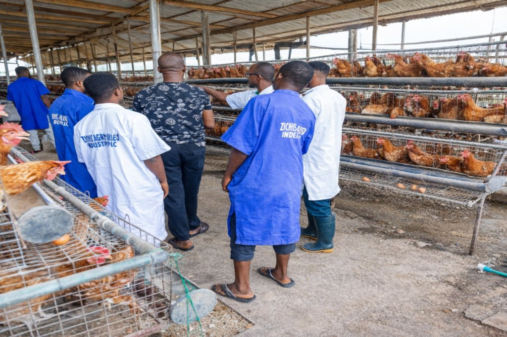

Imegun VillageIjebu Itele, Ogun State
Our farm
Built to scale, run responsibly.
Climate-smart methods, vertical integration and a board that reports to shareholders.
- Farming, feed and processing in one place
- Quarterly financial statements
- Annual General Meeting for shareholders